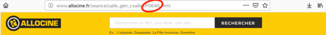
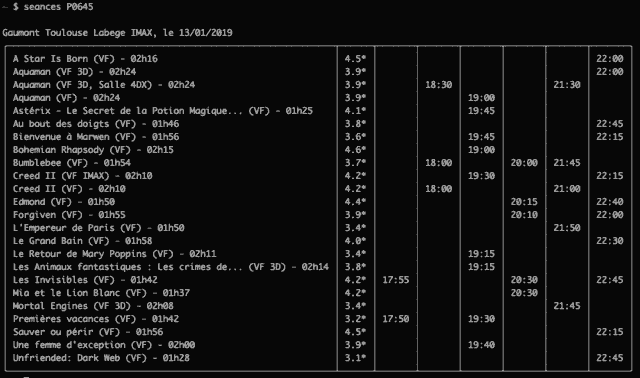
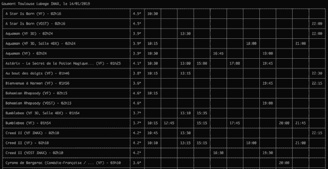

Dans cet article, je vous explique comment répondre à la question "Y-a quoi au ciné aujourd'hui?"... en moins de 5 secondes.
Je vous ai concocté un petit outil qui permet de récupérer les séances de votre cinéma. Tout cela, sans pub, sans clic... directement dans le terminal.
L'outil est disponible sous forme de package Python ou d'image Docker.
Du coup, vous pourrez l'installer avec un simple pip3 install -U allocine ou docker pull thibdct/seances.
Allez faire un tour sur la page du projet allocine-python pour plus d'infos.
Nota : l'image Docker a été bichonnée. Elle utilise une image de base Distroless de Google. Ce qui veut dire qu'elle est de très petite taille (on parle d'environ 50 Mo, contre plusieurs centaines avec l'image Python classique).
La seule chose à connaitre pour utiliser l'outil, c'est l'identifiant de votre cinéma. Pour cela, rendez-vous sur sa page allociné, et récupérez l'identifiant dans l'URL.
Par exemple pour le Gaumont Labège : P0645.

Ensuite, retour dans le terminal : seances.py --help vous donnera les options possibles (ou docker run -it --rm thibdct/seances seances --help si vous utilisez l'image Docker).
Quelques exemples, pour le cinéma Gaumont Labège :
seances.py P0645seances.py P0645 --jour 19/01/2019seances.py P0645 -j+2seances.py P0645 --semaineseances.py P0645 --entrelignes
Vous pouvez donc voir de manière très synthétique l'ensemble des séances de votre cinéma. Le tout dans un joli tableau, avec une colonne par heure (plus facile pour comparer les films d'une même tranche horaire).
Mieux, la deuxième colonne vous donne la note donnée au film par les spectateurs.
Enfin, quand il y a beaucoup de séances, n'hésitez pas à utiliser l'option --entrelignes.

N'hésitez pas à aller faire un tour sur la page du projet allocine-python.